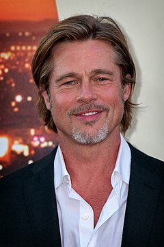
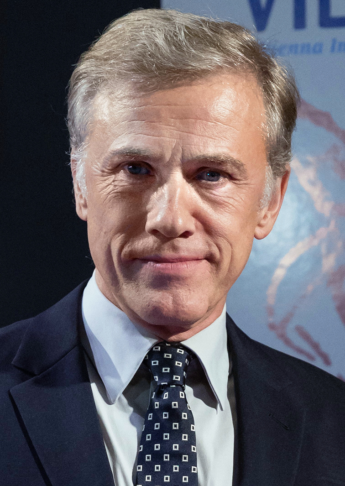
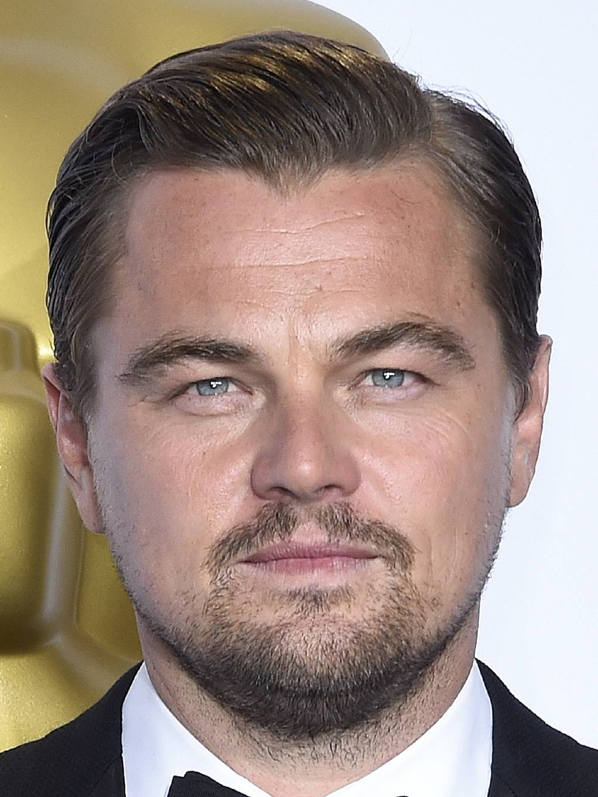

Ві́льям Бре́длі Пітт відомий як Бред Пітт — американський кіноактор, продюсер, лауреат премій «Оскар» та «Золотий глобус», «Еммі», БАФТА та інших.

Крістоф Вальц — австрійський та німецький актор. Набув всесвітньої відомості після ролі штандартенфюрера СС у фільмі Квентіна Тарантіно «Безславні виродки», за яку був відзначений преміями «Оскар», «Золотий глобус» та нагородою Канського кінофестивалю за найкращу чоловічу роль

Леона́рдо Вільгельм Ді Ка́пріо — американський актор, кінопродюсер. Лауреат премії «Оскар» за найкращу чоловічу роль у фільмі «Легенда Г'ю Гласса», та нагороди BAFTA і Гільдії кіноакторів США за виконання ролі Г'ю Гласса.